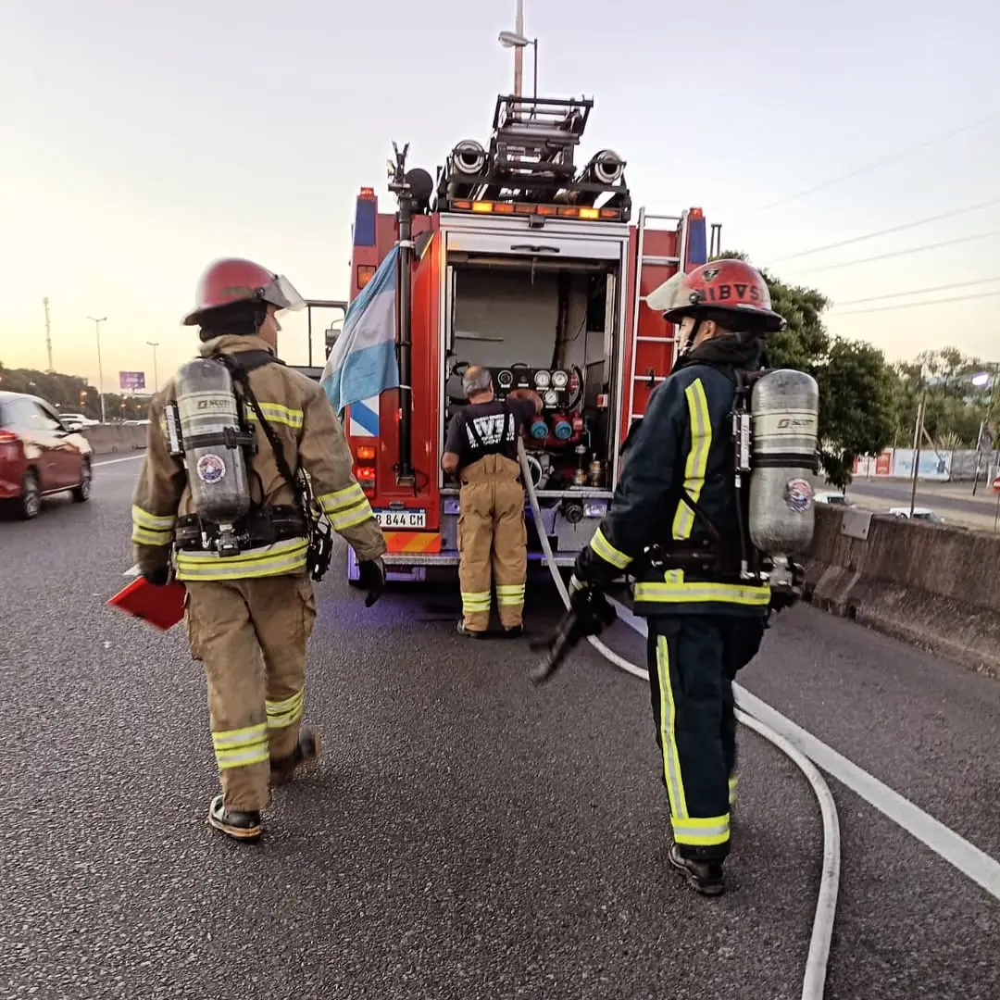

Eventos deportivos
Coberturas preventivas durante competencias y actividades deportivas que convocan a participantes y espectadores.

La seguridad también comienza antes de que ocurra una emergencia.
Nuestra misión no se limita a responder ante las emergencias. También trabajamos para anticiparnos a los riesgos y contribuir a la seguridad de nuestra comunidad.
Las prevenciones constituyen una parte importante de la actividad institucional. Mediante la presencia de personal y recursos operativos, se procura brindar una respuesta inicial ante situaciones de emergencia durante el desarrollo de distintas actividades.
Coberturas preventivas durante competencias y actividades deportivas que convocan a participantes y espectadores.
Presencia preventiva en espectáculos, celebraciones y encuentros culturales, contribuyendo a la seguridad de quienes participan.
Acompañamiento preventivo en acontecimientos y actividades que reúnen a distintos sectores de nuestra comunidad.
Servicios preventivos en actividades que, por sus características, requieren contar con personal y equipamiento de bomberos.
Una cobertura preventiva comienza mucho antes del desarrollo de la actividad.
La organización de una prevención implica considerar las características del evento, los posibles riesgos y los recursos necesarios para brindar una respuesta adecuada.
La asignación del personal, la disposición del equipamiento y la coordinación de las tareas forman parte de esta preparación.
El objetivo es actuar con rapidez y seguridad ante cualquier situación que requiera nuestra intervención.
A través de las coberturas preventivas, los Bomberos Voluntarios de San Isidro acompañamos distintas actividades de nuestra comunidad, aportando nuestros conocimientos, experiencia y recursos operativos.
La prevención es una parte fundamental de nuestro compromiso con la protección de las personas y sus bienes.
Cada cobertura preventiva representa una oportunidad para trabajar junto a nuestra comunidad, promoviendo la seguridad y fortaleciendo nuestra vocación de servicio.
Bomberos Voluntarios de San Isidro